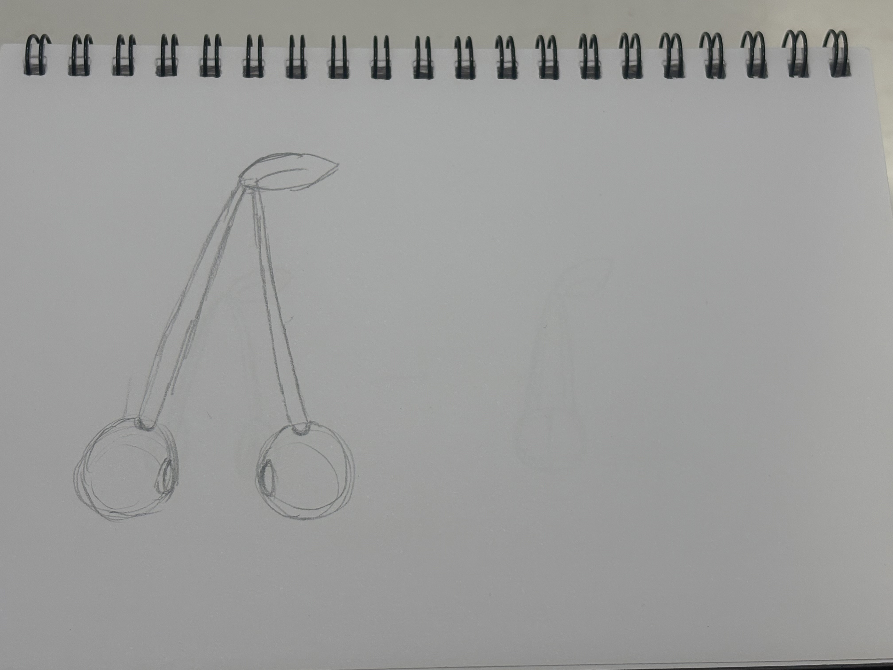
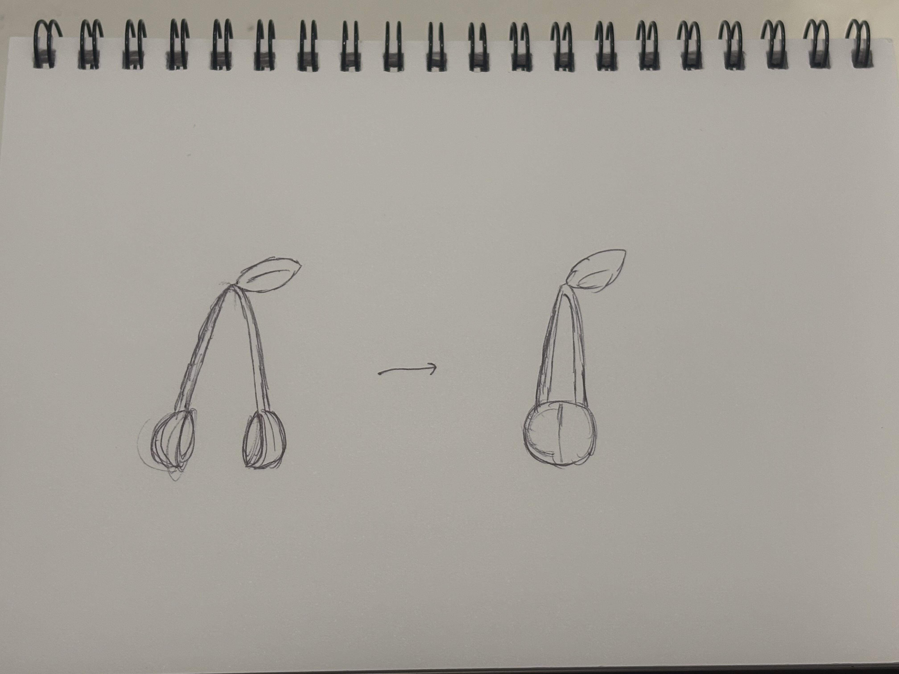
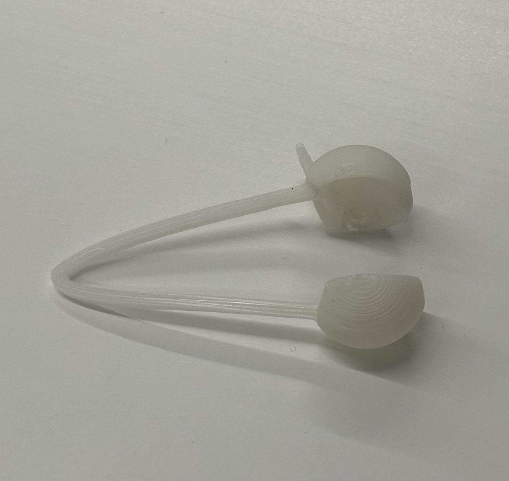
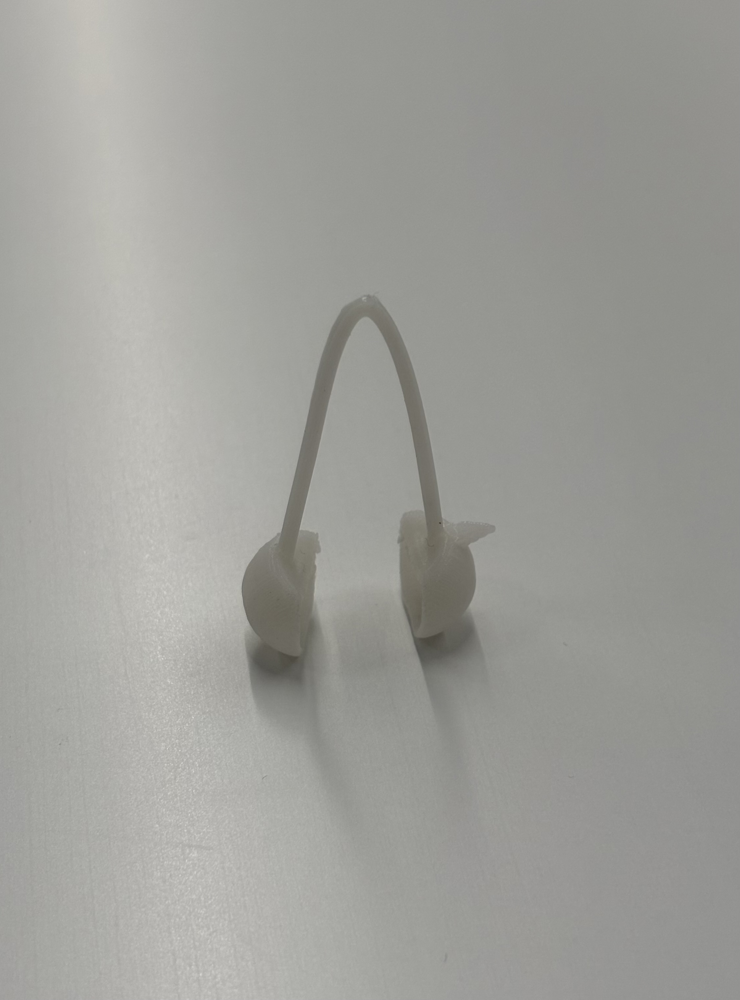
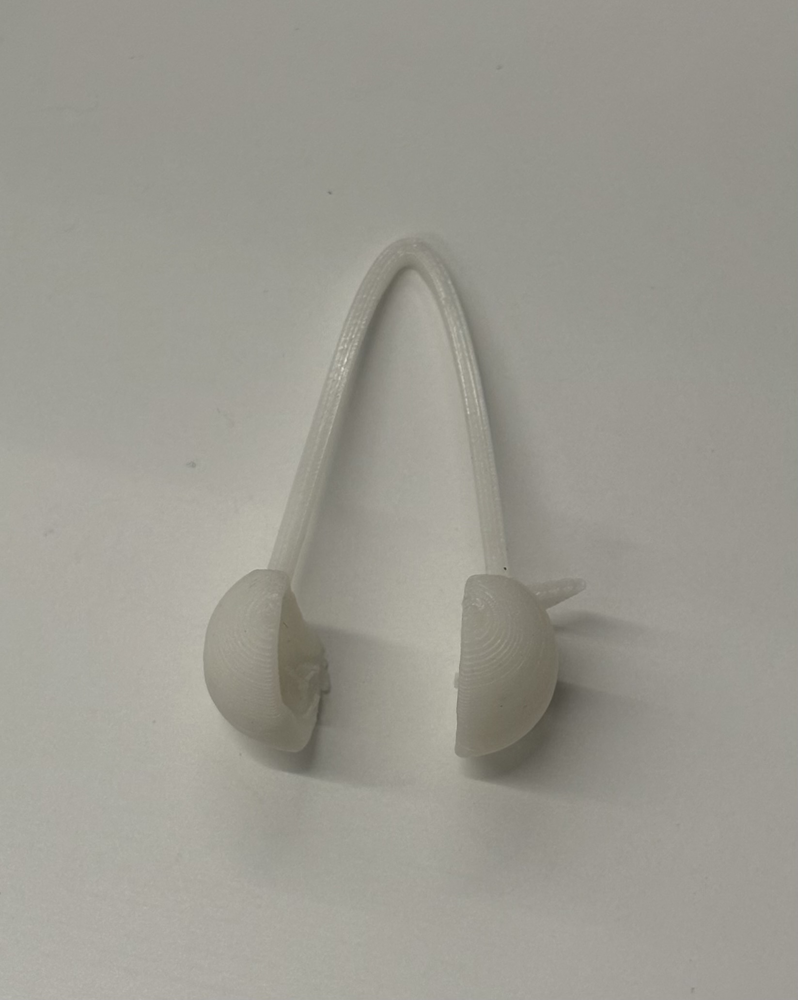

さくらんぼピンセット
ピンセットが二つに別れていることからさくらんぼをイメージし、そこから自分がよく使うビーズをつかめないかと思い、これをつくることを決めた。
スケッチ/3Dデータ
一回目


一度目の設計ではサイズを考慮すると現実的ではないと感じた。そのため考え直すことにした。
二回目


二度目はドーム状のものを二つにし、つかむ際に一つのさくらんぼにみえるように工夫した。
3Dデータ
完成品


